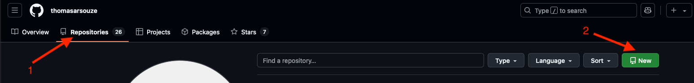
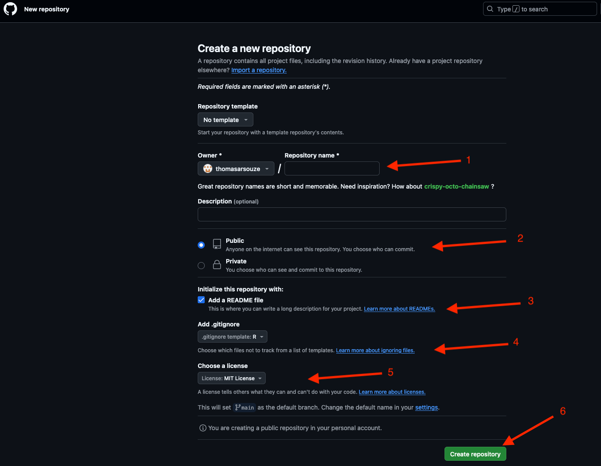
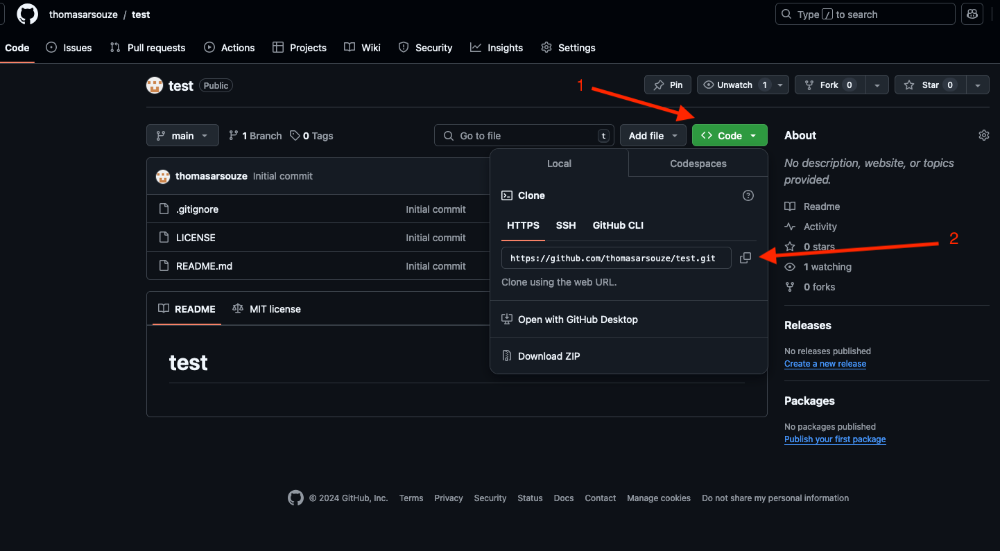
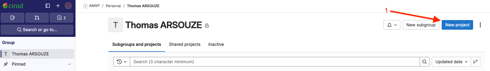
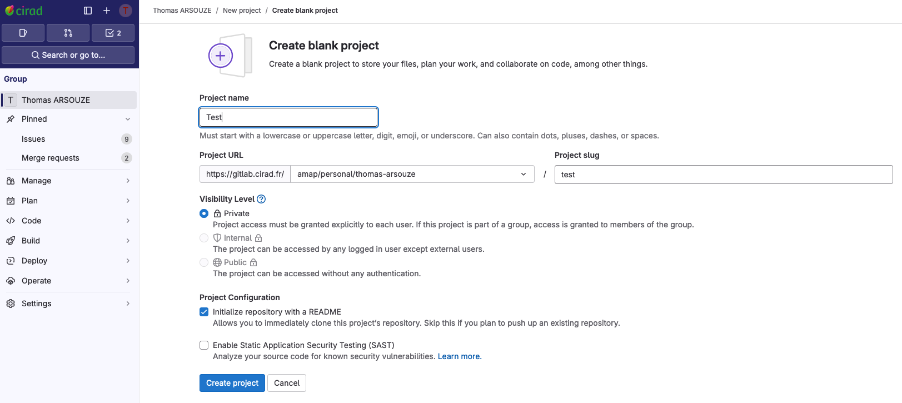
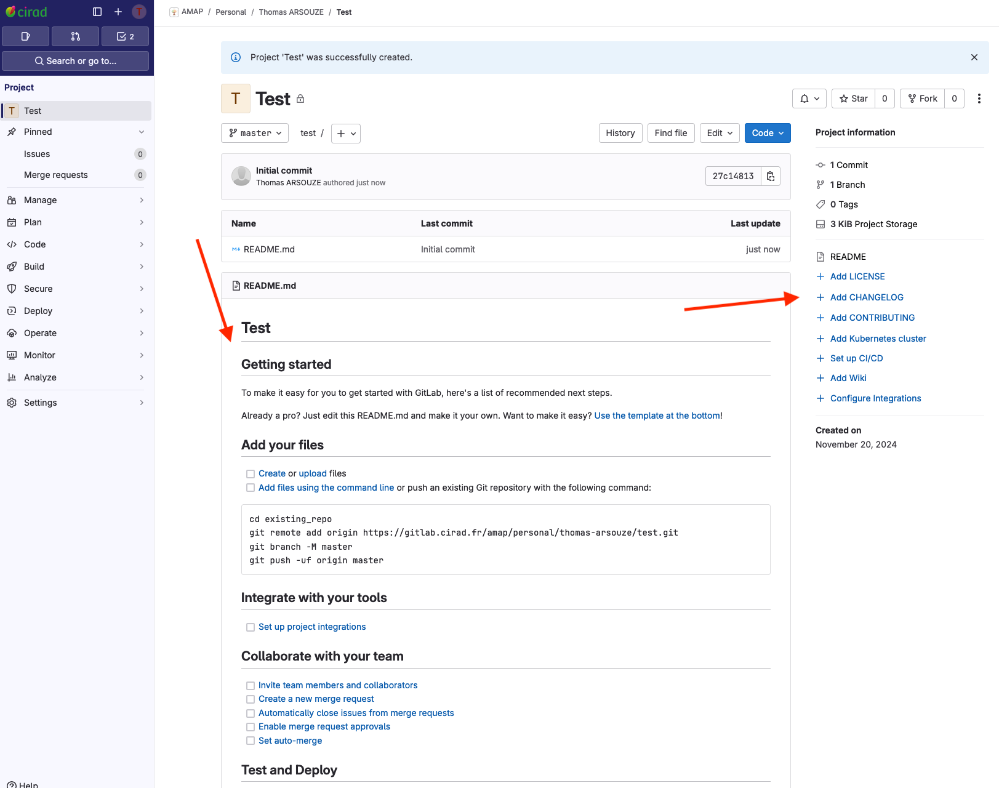

Git
Inspiration here. Official git documentation here. software carpentry repoducibility course
What is Version Control, Git and why should I use it?
We’ll start by exploring how version control can be used to keep track of what one person did and when. Even if you aren’t collaborating with other people, automated version control is much better than this situation:

If you work alone, git is great to track changes and recover previous versions of your files. You can also use a remote repository to have a back up and share your work.
Version control system (VCS)

Let’s imagine that we have a repository already working. When you create a new file as part of the repository (or repo), that file is untracked or unversioned. This means that git will ignore the file and any change you make to it until you add it to the repo. At that point the file is staged and is ready to get into the repository. To do that you do a commit and save that version of the file to the repo.
This workflow modify --> add --> commit will repeat every time you want to save a version of the file. We don’t recommend making a commit every time you save the file or change a comma, and its also not a good idea to make a commit with a billion of changes. With practice and depending on how you work, you will find a comfortable middle ground.
git is (by far) the most widely used and distributed VCS in the world. It is a free software that you install on your computer. It is a command line tool, but there are many graphical interfaces that can help you to use it.
How it works ?
A Git repository (or repo for short) contains all of the project files and the entire revision history. You’ll take an ordinary folder of files, and tell Git to make it a repository. This creates a .git subfolder, which contains all of the Git metadata for tracking changes.
As you commit files, Git stores a reference to the previous version of the file. If the file has changed, Git stores a reference to the changes. This allows Git to quickly compare the current version of a file with the previous version, so you have a record of what has been done, and you can revert to specific versions should you ever need to.
Collaboration
Collaboration is the way different people can work on the same project together. Git makes collaboration easier, allowing changes by different people at the same time, on the same files. This is done by creating branches, which are different versions of the same project. Each branch can be worked on independently, and then merged back into the main branch.

At some point, to make this collaboration easier, you will need to use a remote repository. This is a copy of your local repository that is stored on a server. This allows you to share your work with others, and to access it from different computers, by uploading your changes and downloading changes from others. The most popular remote repository is GitHub (however owned by Microsoft), but there are others like GitLab or Bitbucket.

Note:
Institutional remote repositories are also available and can be easily accessed using your usual institutional credentials. They have the advantage of being hosted localy, and not prone to sudden changes in the terms of service (among others). Also, you don’t contribute to the monopoly of a single company and let them use your data. However, you won’t have the same visibility as on
GitHuband the same quality of services. - IRD GitLab - CIRAD GitLab - INRAE GitLab
Backup
The use of a remote repository is also a way to backup your work. If your computer crashes, you can easily recover your work by downloading the repository from the remote repository. It is as simple as:
git clone https://github.com/username/repo.gitNot only this gives you access to your work, but also to all the previous versions of your work.
Warning:
Those remote repositories are not meant to host large files. They are meant to host code and text files. If you need to backup large files associated with your code or project, you should check for git-lfs. If you’re looking for a VCS for your large dataset, you should check zenodo, or your institutional dataverse. Please check amap-data website for complete information.
Reproducibility
VCS are also a way to ensure the reproducibility of your work. By keeping track of all the changes you made to your files, you can easily reproduce the analysis you did at a specific time. This is also a way to ensure the transparency of your work, as you can share the repository with others, and they can see all the changes you made to the files. More and more journals are asking for the code and data associated with the publication, and using a VCS is a way to ensure that you can provide this information.
By providing a reproducible workflow (including the code, data and the environment to do the analysis), you also foster the reuse of your work by others. This is a way to ensure that your work has a greater impact, and that you can contribute to the scientific community (see Ram (2013)).
Install git
You need Git, so you can use it at the command line and so RStudio or your favorite editor can call it.
If there’s any chance it’s installed already, verify that, rejoice, and skip this step. (But consider updating an existing installation.)
Otherwise, find installation instructions below for your operating system.
Git already installed?
Go to the shell. Enter which git to request the path to your Git executable:
which git
## /usr/bin/gitand git --version to see its version:
git --version
## git version 2.45.2If you are successful, that’s great! You have Git already. No need to install! Move on.
If, instead, you see something more like git: command not found, keep reading.
macOS users might get an immediate offer to install command line developer tools. Yes, you should accept! Click “Install” and read more below.
Windows
Option 1 (highly recommended)
Install Git for Windows, also known as msysgit or “Git Bash”, to get Git in addition to some other useful tools, such as the Bash shell. Yes, all those names are totally confusing, but you might encounter them elsewhere and I want you to be well-informed.
We like this because Git for Windows leaves the Git executable in a conventional location, which will help you and other programs, e.g. RStudio, find it and use it. This also supports a transition to more expert use, because the “Git Bash” shell will be useful as you venture outside of R/RStudio.
NOTE:
When asked about “Adjusting your PATH environment”, make sure to select “Git from the command line and also from 3rd-party software”. Otherwise, we believe it is good to accept the defaults. Note that RStudio for Windows prefers for Git to be installed below C:/Program Files and this appears to be the default. This implies, for example, that the Git executable on my Windows system is found at C:/Program Files/Git/bin/git.exe. Unless you have specific reasons to otherwise, follow this convention.
This also leaves you with a Git client, though not a very good one. So check out Git clients we recommend (chapter 8).
FYI, this appears to be equivalent to what you would download from here.
Option 2 (recommended)
Install Git for Windows via the Chocolatey package manager. If this means anything to you, Chocolatey is like apt-get or Homebrew, but for Windows instead of Debian/Ubuntu Linux or macOS. As far as I can tell, using Chocolatey to install Git for Windows gives the same result as installing it yourself (option 1).
This obviously requires that you already have Chocolatey installed or that you are up for installing it. It is not hard and the instructions are here. This may be worthwhile if it seems likely you will be installing more open source software in the future.
After you install Chocolatey, in a shell, do:
choco install git.installThis installs the most current Git (Install) X.Y.Z Chocolatey package. At the time of writing, that is “Git (Install) 2.33.1”, but that version number will increment over time.
Updating Git for Windows
If you already have Git for Windows, but it’s not the latest version, it’s a good idea to update. You can update like so from the command line:
git update-git-for-windowsmacOS
Option 1 (highly recommended)
Install the Xcode command line tools (not all of Xcode), which includes Git.
Go to the shell and enter one of these commands to elicit an offer to install developer command line tools:
Accept the offer! Click on “Install”.
Here’s another way to request this installation, more directly:
We just happen to find this Git-based trigger apropos.
Note also that, after upgrading macOS, you might need to re-do the above and/or re-agree to the Xcode license agreement. We have seen this cause the RStudio Git pane to disappear on a system where it was previously working. Use commands like those above to tickle Xcode into prompting you for what it needs, then restart RStudio.
Option 2 (recommended)
Install Git from here.
This arguably sets you up the best for the future. It will certainly get you the latest version of Git of all approaches described here. The GitHub home for the macOS installer is here. At that link, you can find more info if something goes wrong or you are working on an old version of macOS.
Option 3 (recommended)
If you anticipate getting heavily into scientific computing, you’re going to be installing and updating lots of software. You should check out Homebrew, “the missing package manager for OS X”. Among many other things, it can install Git for you. Once you have Homebrew installed, do this in the shell:
brew install gitLinux
Install Git via your distro’s package manager.
Ubuntu or Debian Linux:
sudo apt-get install gitFedora or RedHat Linux:
sudo yum install gitA comprehensive list for various Linux and Unix package managers can be found here.
Global configuration (only once)
Necessary configuration
In the shell:
git config --global user.name "Jane Doe"
git config --global user.email "jane@example.com"
git config --global --listsubstituting your name and the email associated with your GitHub account.
The usethis R package offers an alternative approach. You can set your Git user name and email from within R:
## install if needed (do this exactly once):
## install.packages("usethis")
library(usethis)
use_git_config(user.name = "Jane Doe", user.email = "jane@example.org")You can have a secondary mail associated with your git account. To do so, you can add it to your global configuration:
git config --global user.emailOptional configuration
- Default editor. Some git commands need to open an editor. You can set your favorite editor as the default one. For example, to use Rstudio as the default editor:
git config --global core.editor "Rstudio"- Default branch. Every time you create a new repository, a default branch (we will see what it is later) is created. You can set the name of this default branch.
mainis the most common name for this branch.
git config --global init.defaultBranch mainPersonnal access token
You can use a personal access token in place of a password when authenticating to your remote repository in the command line or with the API. This will help you to save some time and avoid typing your password each time you push or pull from the remote repository.
- Go to this page and click “Generate token”.
- From R:
usethis::create_github_token()
Git client
There are many integrations and graphical interfaces for git in IDEs. We here present only the most common ones, but feel free to explore others and complete this section.
Rstudio integration
RStudio is probably your main text editor if you work with R. Luckily, it integrates natively with git.
- First indicate the path to the
gitexecutable in theTools>Global Options>Git/SVNmenu. - Then you need to create a #Personal Access Token# to use with
RStudio. Go to your GitHub account, click on your profile picture, thenSettings>Developer settings>Personal access tokens>Generate new token. Give it a name, and select thereposcope. Copy the token and paste it inRStudiowhen prompted.
You are now ready to use git with RStudio.
Go in File > New Project > Version Control > Git and paste the URL of the repository you want to clone. Then click on Create Project.
You will now be able to see a tab Git in the top right pane of RStudio, commit changes, and push them to the remote repository. You can also use the terminal pane to use git commands directly.
VSCode integration
If you are using VSCode, you can install the GitLens extension to have a better integration with git.
This allows you to see the history of your project, compare files between versions, push and pull changes, and many more. All without the terminal or the git command line.
Note:
VSCodeis highly customizable to fit your needs. You can also check theGitHub Pull Requestsextension to review, comment and merge pull requests directly fromVSCode, theGitHub Actionsextension to see the status of your CI/CD pipelines, and theGitHub Copilotextension to have an AI assistant to help you write code.
Github desktop
Github Desktop is not an editor, but a graphical interface for git with a lot of feature for an easy integration with GitHub. You can see the history of your project, compare files between versions, push and pull changes, and many more. All without the terminal or the git command line.
Create a new git repository
When you start a new project, whether it is a new analysis, a new package, or a new paper, you will need to create a new repository that will be a git repository. This repository will contain all the files of your project with the history of the changes all the contributors made to the files.
You have two options to create a new repository:
create a new repository on the git server and clone it on your computer,
create a new repository on your computer and push it to the git server.
Where to store your git repositories
First, you need to decide where you want to store your git repositories. You have many options, depending on your needs (features, UI, collaboration, etc…) and your preferences (visibility to other researchers, privacy, etc…).
GitHub
Github is (by far) the most popular git server, created in 2008 and the first cloud-hosted solution. It is now owned by Microsoft. This is probably the best option if you have an open-source project that you want to share with the community, and you are open to collaboration. It provides a lot of features for collaboration: issues, discussions, project management, pull requests reviews, etc… It also has a built in CI/CD pipeline with GitHub Actions that can help you automate your workflow (testing, building, deploying, etc…) and a web hosting service with GitHub Pages.
Institutional git servers
CIRAD, INRAE and IRD have their own git servers based on Gitlab. This means that all the repositories you create on those servers are hosted by the institutions and not by a third party. This is an excellent option for internal or institution-based projects as Gitlab offers very similar features to GitHub and you’ve got a local support. However, collaboration with other researchers outside of the institution is more complicated (RENATER login are used to access the platform) and some services are not as good as GitHub (particularly CI/CD).
Self-hosted git servers
Mentioned here for completeness, but not recommended for most users as this requires advanced technical skills and a dedicated server.
You can host your own git server on your own server. This is a good option if you want to have full control over your data and your repositories, but it requires some maintenance. A good comparison of the different self-hosted git servers is available here.
Github first
To create a new git repository starting from GitHub, you need to:
- Create a new repository from the
Repositoriestab

- Give a name to your repository (
1), a description, and choose if you want it to be public or private (2). It is a (very) good practice to add aREADME.mdfile to your repository that will be displayed on the main page of your repository and will give a brief description of your project (3), aLICENSEfile that will define the license of your project (4), and a.gitignorefile that will define the files that should not be tracked bygit(5).

- You now have a brand new repository on
GitHub. You (and any collaborator) can now clone it to have it localy on your own computer by clicking on the greenCodebutton (1) and copying the URL of the repository (2).

- You can now clone the repository on your computer by opening a terminal and typing:
git clone https://github.com/thomasarsouze/test.gitor using RStudio and File > New Project > Version Control > Git and pasting the URL of the repository you want to clone. Then click on Create Project;
or using GitHub Desktop and File > Clone repository and pasting the URL of the repository you want to clone;
or using VSCode and View > Command Palette > Git: Clone and pasting the URL of the repository you want to clone.
Gilab first
Creating a new repository on Gitlab is very similar to GitHub. You can see the steps :


Gitlab provides pre-defined customable actions for initiating your repository.

Local first
git init.gitfolder.gitignorefile
Git basics
Git basic commands
git statusgit add- …
- liens vers formations + documentation
Git workflow
- Working directory, staging area, repository
- branches
pushandpull
Merge conflicts
FAQ
My repo is too big ! How to clean it ?
If by mistake you added large files to your repository, remove it from directory will not be sufficient, as you also need to remove it from the history of the repository. Here are some tips to clean your repository:
- List files in the history by size. This command will list the 100 biggest files in your repository, and provide the blob hash and the name of the file concerned, as well as the size of the file.
# For OSX only
brew install coreutils
git rev-list --objects --all --missing=print |
git cat-file --batch-check='%(objecttype) %(objectname) %(objectsize) %(rest)' |
sed -n 's/^blob //p' |
grep -vF --file=<(git ls-tree -r HEAD | awk '{print $3}') | sort --numeric-sort --key=2 |
$(command -v gnumfmt || echo gnumfmt) --field=2 --to=iec-i --suffix=B --padding=7 --round=nearest |
head -100
>> big_blobs.txt- Next, you need to use BFG repo-cleaner
# First clone your repo using --mirror
git clone --mirror https://github.com/myorg/myrepo.git
# Use the BFG repo-cleaner
# First let's check all options
java -jar bfg.jar --help
# From the list of big blobs obtained previously, keep only the blob hash
# you can then remove them from the history of the repository
java -jar bfg.jar --strip-blobs-with-ids big_blobs.txt myrepo.git
# Other option is to remove directly files bigger thant XMo
java -jar bfg.jar --strip-blobs-bigger-than 5M myrepo.git
# Finaly update your repository online
git reflog expire --expire=now --all && git gc --prune=now --aggressive